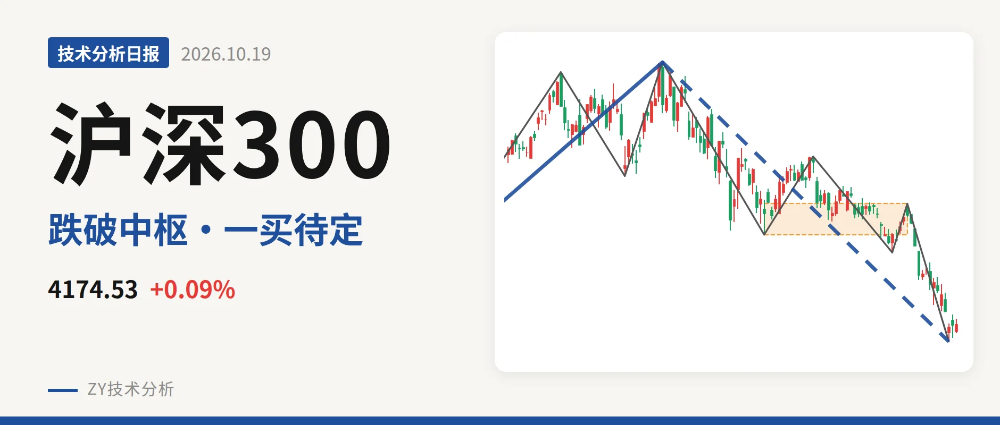
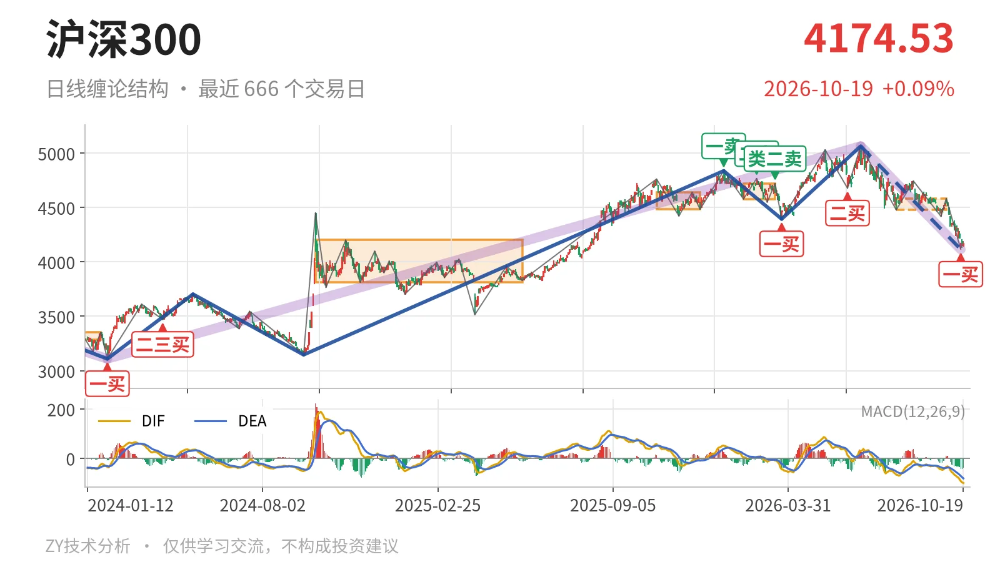
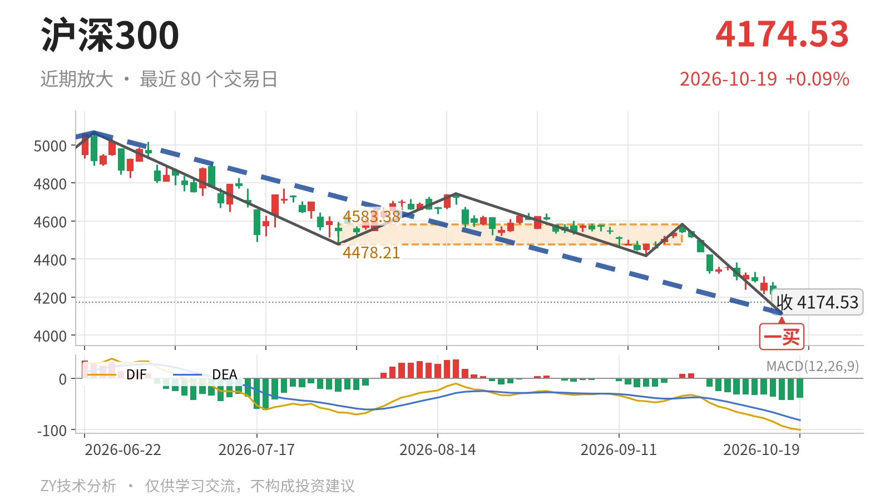

沪深300｜跌破中枢，4478点反抽定强弱

最近日线中枢 4478.21—4583.38点，收盘位于中枢之下
一句话：收于4170.61点，位于日线中枢下方，反抽4478点前偏弱。
🧩 走势结构：日线下跌线段仍在延续，更大上涨段未坏
6月23日从5064.27点开始的日线下跌线段没有结束，10月15日低点4115.07点只是线段内低点。线段内已有5笔，跌幅约18.7%，并把3月24日至6月23日的上涨线段重新压回。更大级别上，2024年2月2日至2026年6月23日的上涨段从3108.35点走到5064.27点，涨幅约62.9%，还没有走完。当前回落暂时只能看作这段上涨里的回落段，而不是大级别转折。

📍 中枢与位置：最新价跌破最近日线中枢，中枢下移
最新收盘4170.61点，位于7月30日至9月22日日线笔中枢4478.21—4583.38点下方，低于下沿约6.9%。这个中枢还没有完成，但与2月3日至3月17日的日线笔中枢4578.21—4720.86点相比，中枢位置已经下移。价格离开下沿约308点，反抽至少要回到4478点附近才有回到中枢的条件。
🛑 买卖点：10月15日一买只是笔级
10月15日形成日线笔级别一买4115.07点，所在9月22日至10月15日的下跌笔已结束。10月16日反弹最高4206.89点、最低4127.94点，仅1根K线，还未成笔。上方卖点排列是：1月13日一卖4836.95点、2月25日二卖4766.56点、3月17日类二卖4720.86点，一个比一个低。若后续跌破4115点，这个一买只对应更小级别，不构成日线线段转折。

⚡ 背驰：绿柱面积不配合，底背驰还未成立
对比同向下跌笔，6月23日至7月30日下跌笔的绿柱面积650、DIF低点-66.5；9月22日至10月15日下跌笔的绿柱面积274、DIF低点-92.6。价格新低但绿柱面积没有放大，DIF继续走低，因此不是标准“新低不新弱”。最后一笔已被10月16日反弹破坏，背驰要回到仍在延续的6月23日以来下跌线段上，线段级底背驰还不能成立。最新DIF为-97.7，仍在零轴下方，MACD柱为-41.9，日线仍处在零轴下方的空头结构里。
🔭 关键位置观察：反抽4478点是第一道结构关口
当前价格在最近日线中枢下方，反抽若回不到4478点上方，日线结构上构成三卖。重新站上4583点，则这波回落更可能只是中枢扩展。下方先看4115点附近，它是10月15日低点；更下方有2024年10月8日至2025年5月30日的日线笔中枢3812.32—4200.91点承接。整体判断偏弱，价格仍在该更大中枢内。
⚠️ 本文为基于公开行情数据的缠论技术结构记录，由程序自动计算并生成，仅供学习交流，不构成任何投资建议。市场有风险，投资需谨慎。